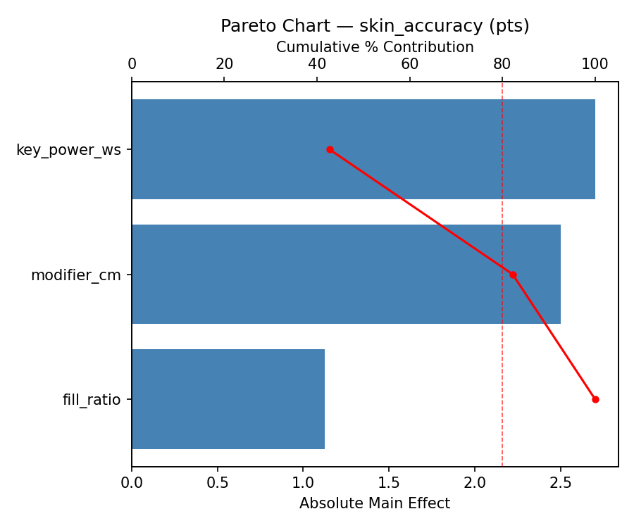
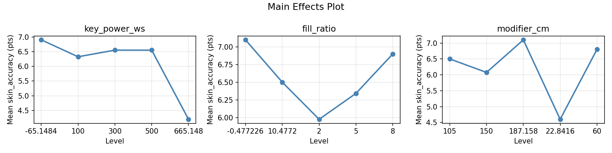
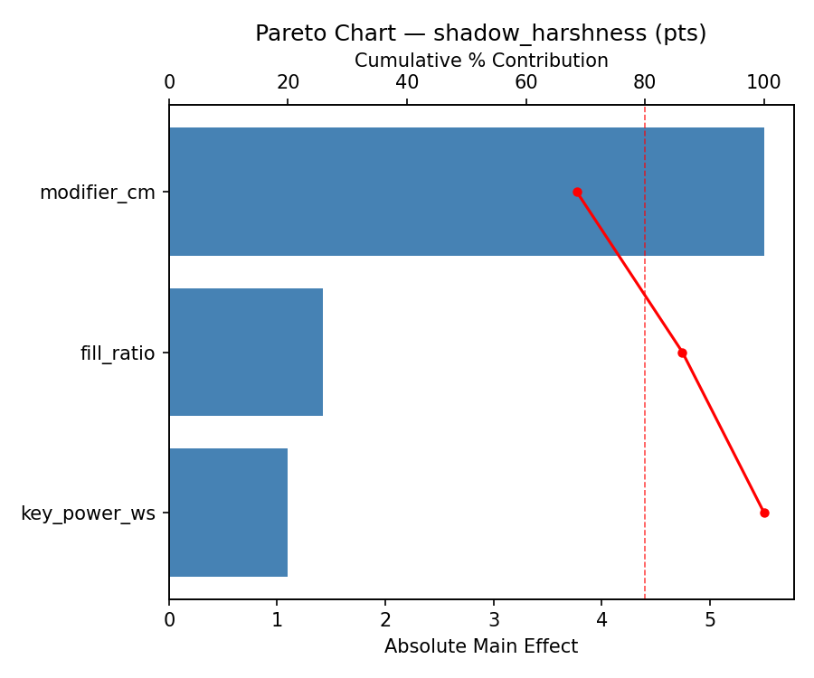
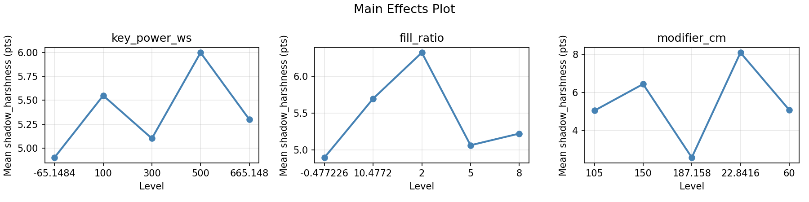
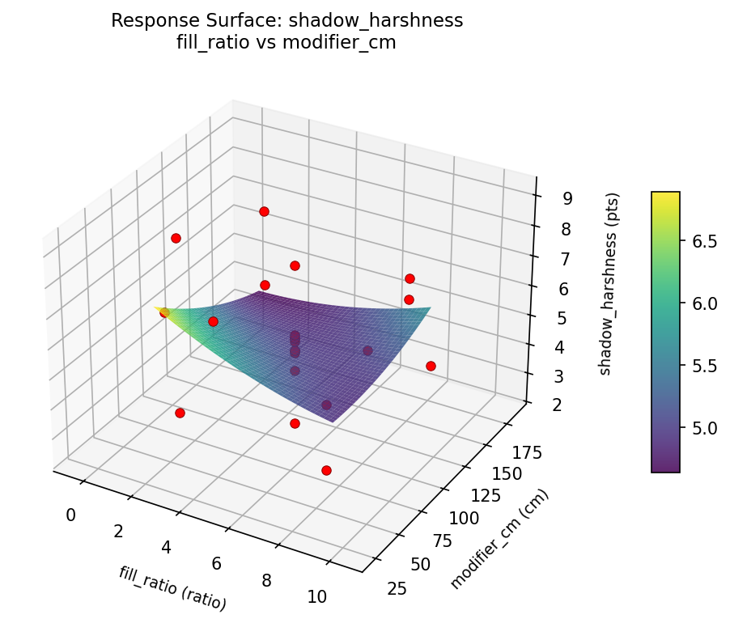
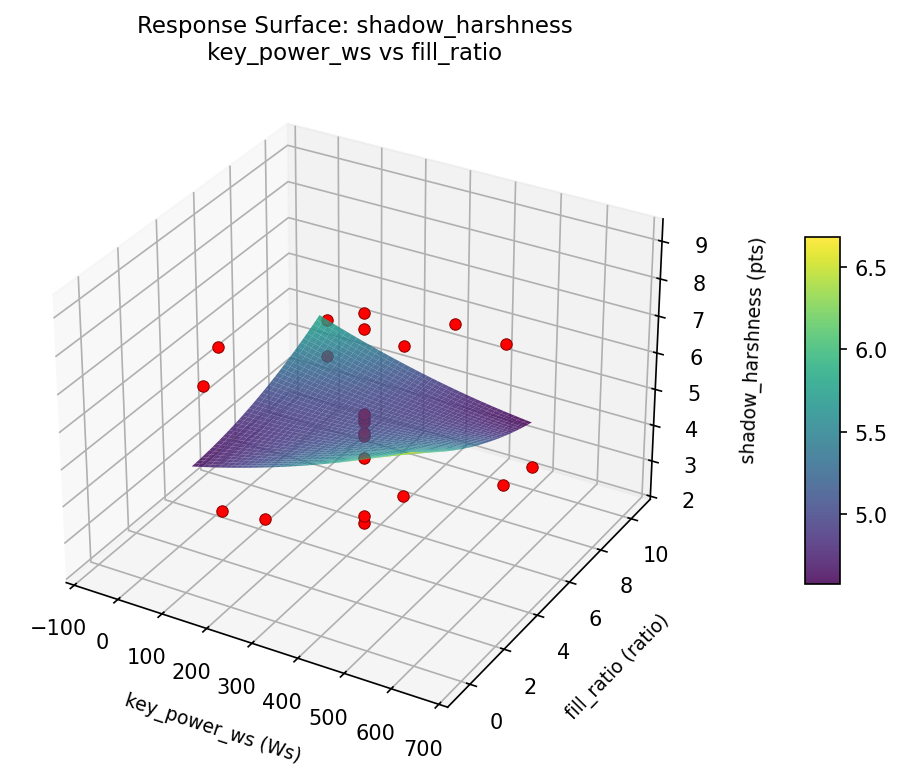
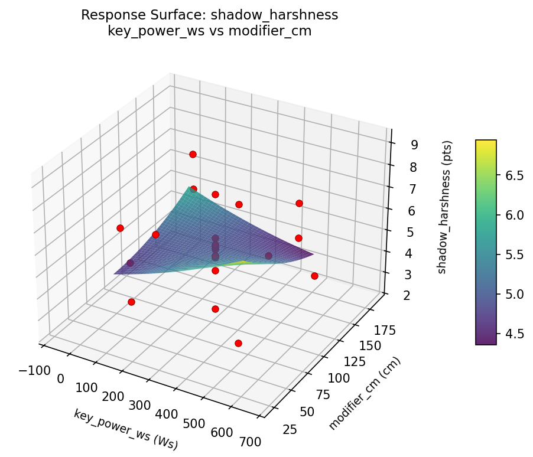
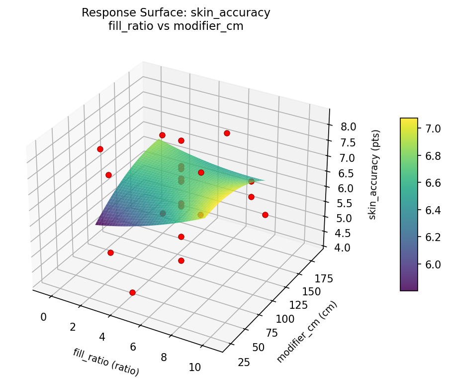
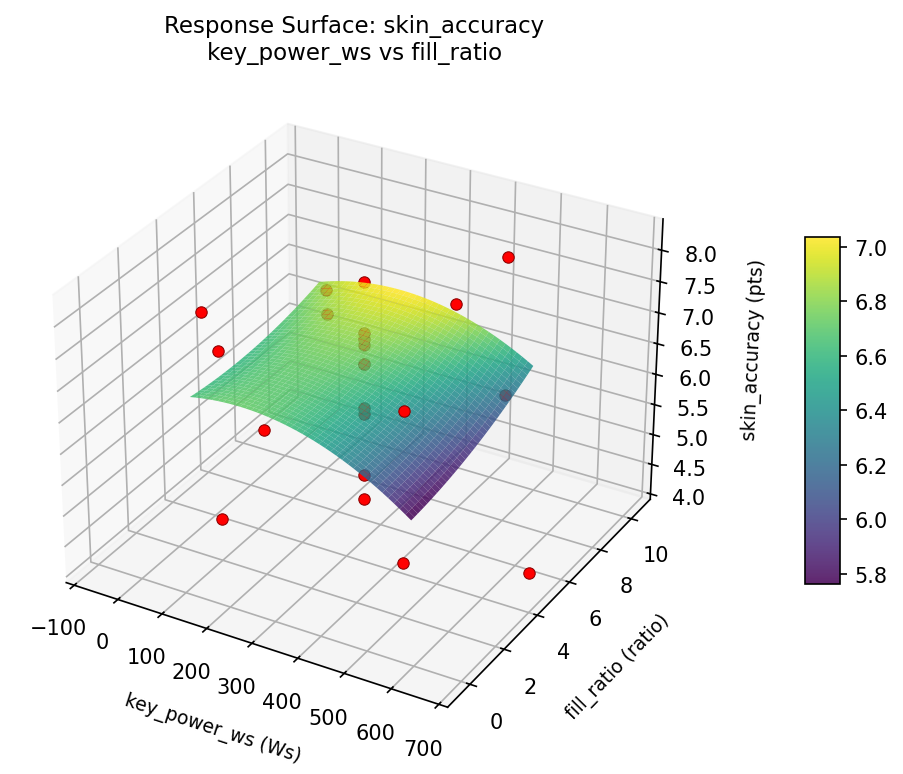
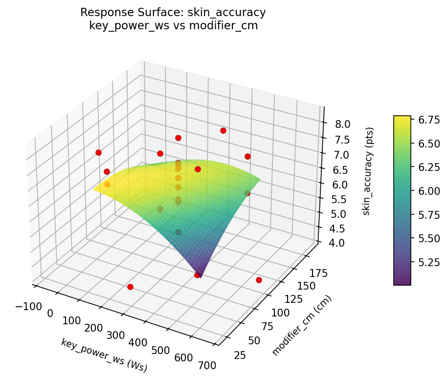

Summary
This experiment investigates studio portrait lighting. Central composite design to maximize skin tone accuracy and minimize harsh shadows by tuning key light power, fill ratio, and modifier size.
The design varies 3 factors: key power ws (Ws), ranging from 100 to 500, fill ratio (ratio), ranging from 2 to 8, and modifier cm (cm), ranging from 60 to 150. The goal is to optimize 2 responses: skin accuracy (pts) (maximize) and shadow harshness (pts) (minimize). Fixed conditions held constant across all runs include background = grey, distance m = 2.
A Central Composite Design (CCD) was selected to fit a full quadratic response surface model, including curvature and interaction effects. With 3 factors this produces 22 runs including center points and axial (star) points that extend beyond the factorial range.
Quadratic response surface models were fitted to capture potential curvature and factor interactions. The RSM contour plots below visualize how pairs of factors jointly affect each response.
Key Findings
For skin accuracy, the most influential factors were key power ws (42.7%), modifier cm (39.5%), fill ratio (17.8%). The best observed value was 8.2 (at key power ws = 300, fill ratio = 5, modifier cm = 105).
For shadow harshness, the most influential factors were modifier cm (68.5%), fill ratio (17.8%), key power ws (13.7%). The best observed value was 2.4 (at key power ws = 300, fill ratio = 5, modifier cm = 187.158).
Recommended Next Steps
- Run confirmation experiments at the predicted optimal settings to validate the model.
- Consider whether any fixed factors should be varied in a future study.
Experimental Setup
Factors
| Factor | Low | High | Unit |
|---|
key_power_ws | 100 | 500 | Ws |
fill_ratio | 2 | 8 | ratio |
modifier_cm | 60 | 150 | cm |
Fixed: background = grey, distance_m = 2
Responses
| Response | Direction | Unit |
|---|
skin_accuracy | ↑ maximize | pts |
shadow_harshness | ↓ minimize | pts |
Configuration
{
"metadata": {
"name": "Studio Portrait Lighting",
"description": "Central composite design to maximize skin tone accuracy and minimize harsh shadows by tuning key light power, fill ratio, and modifier size"
},
"factors": [
{
"name": "key_power_ws",
"levels": [
"100",
"500"
],
"type": "continuous",
"unit": "Ws"
},
{
"name": "fill_ratio",
"levels": [
"2",
"8"
],
"type": "continuous",
"unit": "ratio"
},
{
"name": "modifier_cm",
"levels": [
"60",
"150"
],
"type": "continuous",
"unit": "cm"
}
],
"fixed_factors": {
"background": "grey",
"distance_m": "2"
},
"responses": [
{
"name": "skin_accuracy",
"optimize": "maximize",
"unit": "pts"
},
{
"name": "shadow_harshness",
"optimize": "minimize",
"unit": "pts"
}
],
"settings": {
"operation": "central_composite",
"test_script": "use_cases/148_studio_lighting/sim.sh"
}
}
Experimental Matrix
The Central Composite Design produces 22 runs. Each row is one experiment with specific factor settings.
| Run | key_power_ws | fill_ratio | modifier_cm |
|---|
| 1 | 300 | 5 | 105 |
| 2 | 500 | 2 | 150 |
| 3 | 100 | 8 | 60 |
| 4 | 300 | 10.4772 | 105 |
| 5 | 300 | 5 | 105 |
| 6 | -65.1484 | 5 | 105 |
| 7 | 300 | 5 | 22.8416 |
| 8 | 300 | 5 | 105 |
| 9 | 500 | 8 | 60 |
| 10 | 665.148 | 5 | 105 |
| 11 | 300 | 5 | 105 |
| 12 | 300 | -0.477226 | 105 |
| 13 | 300 | 5 | 105 |
| 14 | 100 | 2 | 150 |
| 15 | 300 | 5 | 105 |
| 16 | 500 | 2 | 60 |
| 17 | 300 | 5 | 187.158 |
| 18 | 500 | 8 | 150 |
| 19 | 300 | 5 | 105 |
| 20 | 100 | 2 | 60 |
| 21 | 100 | 8 | 150 |
| 22 | 300 | 5 | 105 |
Step-by-Step Workflow
1
Preview the design
$ python doe.py info --config use_cases/148_studio_lighting/config.json
2
Generate the runner script
$ python doe.py generate --config use_cases/148_studio_lighting/config.json \
--output use_cases/148_studio_lighting/results/run.sh --seed 42
3
Execute the experiments
$ bash use_cases/148_studio_lighting/results/run.sh
4
Analyze results
$ python doe.py analyze --config use_cases/148_studio_lighting/config.json
5
Get optimization recommendations
$ python doe.py optimize --config use_cases/148_studio_lighting/config.json
6
Generate the HTML report
$ python doe.py report --config use_cases/148_studio_lighting/config.json \
--output use_cases/148_studio_lighting/results/report.html
Features Exercised
| Feature | Value |
|---|
| Design type | central_composite |
| Factor types | continuous (all 3) |
| Arg style | double-dash |
| Responses | 2 (skin_accuracy ↑, shadow_harshness ↓) |
| Total runs | 22 |
Analysis Results
Generated from actual experiment runs using the DOE Helper Tool.
Response: skin_accuracy
Top factors: key_power_ws (42.7%), modifier_cm (39.5%), fill_ratio (17.8%).
Pareto Chart

Main Effects Plot

Response: shadow_harshness
Top factors: modifier_cm (68.5%), fill_ratio (17.8%), key_power_ws (13.7%).
Pareto Chart

Main Effects Plot

Response Surface Plots
3D surfaces fitted with quadratic RSM. Red dots are observed data points.
shadow harshness fill ratio vs modifier cm

shadow harshness key power ws vs fill ratio

shadow harshness key power ws vs modifier cm

skin accuracy fill ratio vs modifier cm

skin accuracy key power ws vs fill ratio

skin accuracy key power ws vs modifier cm

Full Analysis Output
RSM surface: rsm_skin_accuracy_key_power_ws_vs_fill_ratio.png
RSM surface: rsm_skin_accuracy_key_power_ws_vs_modifier_cm.png
RSM surface: rsm_skin_accuracy_fill_ratio_vs_modifier_cm.png
RSM surface: rsm_shadow_harshness_key_power_ws_vs_fill_ratio.png
RSM surface: rsm_shadow_harshness_key_power_ws_vs_modifier_cm.png
RSM surface: rsm_shadow_harshness_fill_ratio_vs_modifier_cm.png
=== Main Effects: skin_accuracy ===
Factor Effect Std Error % Contribution
--------------------------------------------------------------
key_power_ws 2.7000 0.2422 42.7%
modifier_cm 2.5000 0.2422 39.5%
fill_ratio 1.1250 0.2422 17.8%
=== Summary Statistics: skin_accuracy ===
key_power_ws:
Level N Mean Std Min Max
------------------------------------------------------------
-65.1484 1 6.9000 0.0000 6.9000 6.9000
100 4 6.3250 1.1955 4.6000 7.3000
300 12 6.5500 0.9922 4.6000 8.1000
500 4 6.5500 1.4731 4.8000 8.2000
665.148 1 4.2000 0.0000 4.2000 4.2000
fill_ratio:
Level N Mean Std Min Max
------------------------------------------------------------
-0.477226 1 7.1000 0.0000 7.1000 7.1000
10.4772 1 6.5000 0.0000 6.5000 6.5000
2 4 5.9750 1.4751 4.6000 7.3000
5 12 6.3417 1.1927 4.2000 8.1000
8 4 6.9000 0.9416 6.0000 8.2000
modifier_cm:
Level N Mean Std Min Max
------------------------------------------------------------
105 12 6.5000 1.0592 4.2000 8.1000
150 4 6.0750 1.0996 4.6000 7.2000
187.158 1 7.1000 0.0000 7.1000 7.1000
22.8416 1 4.6000 0.0000 4.6000 4.6000
60 4 6.8000 1.4399 4.8000 8.2000
=== Main Effects: shadow_harshness ===
Factor Effect Std Error % Contribution
--------------------------------------------------------------
modifier_cm 5.5000 0.3730 68.5%
fill_ratio 1.4250 0.3730 17.8%
key_power_ws 1.1000 0.3730 13.7%
=== Summary Statistics: shadow_harshness ===
key_power_ws:
Level N Mean Std Min Max
------------------------------------------------------------
-65.1484 1 4.9000 0.0000 4.9000 4.9000
100 4 5.5500 1.8430 3.3000 7.7000
300 12 5.1000 1.6728 2.4000 8.1000
500 4 6.0000 2.6141 2.9000 9.1000
665.148 1 5.3000 0.0000 5.3000 5.3000
fill_ratio:
Level N Mean Std Min Max
------------------------------------------------------------
-0.477226 1 4.9000 0.0000 4.9000 4.9000
10.4772 1 5.7000 0.0000 5.7000 5.7000
2 4 6.3250 2.5825 3.3000 9.1000
5 12 5.0667 1.6637 2.4000 8.1000
8 4 5.2250 1.6998 2.9000 6.8000
modifier_cm:
Level N Mean Std Min Max
------------------------------------------------------------
105 12 5.0583 1.1905 2.4000 7.7000
150 4 6.4500 1.0599 5.2000 7.7000
187.158 1 2.6000 0.0000 2.6000 2.6000
22.8416 1 8.1000 0.0000 8.1000 8.1000
60 4 5.1000 2.8331 2.9000 9.1000
Pareto chart (skin_accuracy): use_cases/148_studio_lighting/results/analysis/pareto_skin_accuracy.png
Pareto chart (shadow_harshness): use_cases/148_studio_lighting/results/analysis/pareto_shadow_harshness.png
Main effects (skin_accuracy): use_cases/148_studio_lighting/results/analysis/main_effects_skin_accuracy.png
Main effects (shadow_harshness): use_cases/148_studio_lighting/results/analysis/main_effects_shadow_harshness.png
Optimization Recommendations
=== Optimization: skin_accuracy ===
Direction: maximize
Best observed run: #2
key_power_ws = 300
fill_ratio = 5
modifier_cm = 105
Value: 8.2
RSM Model (linear, R² = 0.3288, Adj R² = 0.2170):
Coefficients:
intercept +6.4182
key_power_ws -0.0966
fill_ratio +0.0486
modifier_cm +0.7718
RSM Model (quadratic, R² = 0.4743, Adj R² = 0.0800):
Coefficients:
intercept +6.3603
key_power_ws -0.0966
fill_ratio +0.0486
modifier_cm +0.7718
key_power_ws*fill_ratio +0.5000
key_power_ws*modifier_cm -0.1000
fill_ratio*modifier_cm +0.2750
key_power_ws^2 +0.1389
fill_ratio^2 +0.1089
modifier_cm^2 -0.1611
Curvature analysis:
modifier_cm coef=-0.1611 concave (has a maximum)
key_power_ws coef=+0.1389 convex (has a minimum)
fill_ratio coef=+0.1089 convex (has a minimum)
Notable interactions:
key_power_ws*fill_ratio coef=+0.5000 (synergistic)
Predicted optimum (from linear model):
key_power_ws = 300
fill_ratio = 5
modifier_cm = 187.158
Predicted value: 7.8274
Model quality: Weak fit — consider adding center points or using a different design.
Factor importance:
1. modifier_cm (effect: 3.9, contribution: 62.2%)
2. key_power_ws (effect: 1.2, contribution: 19.5%)
3. fill_ratio (effect: 1.2, contribution: 18.3%)
=== Optimization: shadow_harshness ===
Direction: minimize
Best observed run: #17
key_power_ws = 300
fill_ratio = 5
modifier_cm = 187.158
Value: 2.4
RSM Model (linear, R² = 0.0862, Adj R² = -0.0661):
Coefficients:
intercept +5.3455
key_power_ws +0.0489
fill_ratio -0.1787
modifier_cm -0.5860
RSM Model (quadratic, R² = 0.5226, Adj R² = 0.1645):
Coefficients:
intercept +6.2520
key_power_ws +0.0489
fill_ratio -0.1787
modifier_cm -0.5860
key_power_ws*fill_ratio -0.1375
key_power_ws*modifier_cm +1.0125
fill_ratio*modifier_cm -1.0125
key_power_ws^2 -0.2783
fill_ratio^2 -0.5033
modifier_cm^2 -0.5783
Curvature analysis:
modifier_cm coef=-0.5783 concave (has a maximum)
fill_ratio coef=-0.5033 concave (has a maximum)
key_power_ws coef=-0.2783 concave (has a maximum)
Notable interactions:
fill_ratio*modifier_cm coef=-1.0125 (antagonistic)
key_power_ws*modifier_cm coef=+1.0125 (synergistic)
Predicted optimum (from quadratic model):
key_power_ws = 100
fill_ratio = 8
modifier_cm = 60
Predicted value: 7.4130
Model quality: Moderate fit — use predictions directionally, not precisely.
Factor importance:
1. modifier_cm (effect: 3.3, contribution: 52.7%)
2. fill_ratio (effect: 2.3, contribution: 36.6%)
3. key_power_ws (effect: 0.7, contribution: 10.7%)